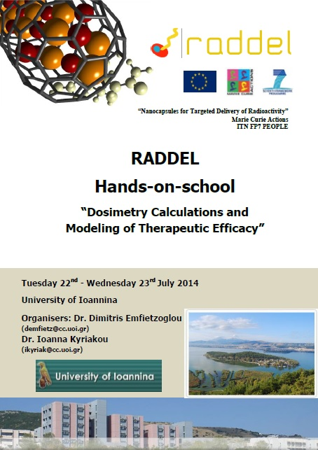
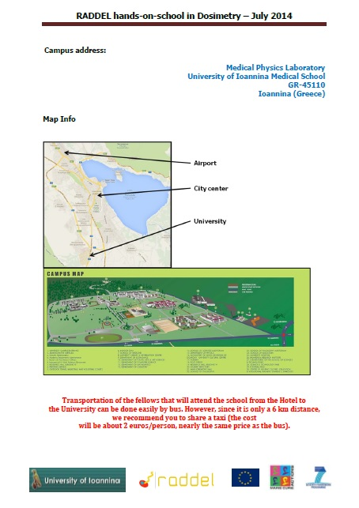
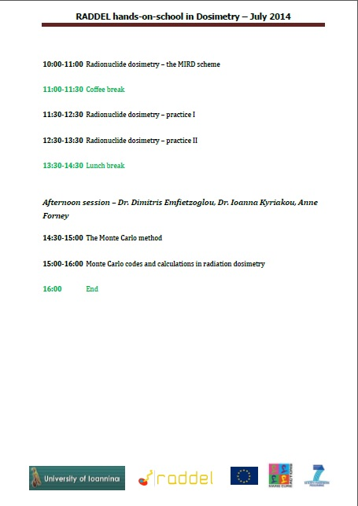

Pictures from RADDEL 5th network meeting and training activities (13-16th January 2015, Oxford-London, United Kingdom)
- Created on 21 January 2015
Last week, several activities were organised in the frame of the RADDEL meeting being held in Oxford (United Kingdom): project took place:
- 5th RADDEL network meeting, including scientific discussions and a Supervisory Board session. The social dinner for the network took place at the wonderful Balliol College Hall;
- 4th and final Workshop on Complementary Training "A Practical Guide on EU funding: the Basics of Horizon2020" imparted by Ms. Gill Wells from the University of Oxford's European Team;
- 2nd and final RADDEL Workshop on "Development and Marketing of Radiopharmaceuticals", delivered by industrial partner IBA;
- 2nd and final RADDEL Hands-on-school in "Pharmacological Studies of Nanomaterials" organised by King's College London (KCL) on 15-16th of January.
Find below some pictures for this week full of activities for the ITN fellows.
Secondments of several RADDEL fellows at partner institutions
- Created on 07 October 2014
In the last few months several secondments have taken place in the frame of the network, with fellows traveling to other partner institutions for periods of several weeks in order to work on different research environments and be able to improve their research skills.
Fellow Ana Santidrián (ESR11) from RADDEL partner HIPC (Prague, Czech Republic) travelled to UNITS (Trieste, Italy) in January this year to complete a 3-week secondment at UNITS, working on different methods for the funtionalization of carbon nanotubes. One month later, fellow José Miguel González (ER4) from partner UNITS travelled to Barcelona to spent a 1-month secondment at partner institutions CSIC and ICN, both located in the Bellaterra campus of the Autonomous University of Barcelona (UAB). In this period, José had the opportunity to learn and apply different methods for the purification, shortening and filling of carbon nanocapsules, and he also carried out the characterization and interpretation of results for the synthesized samples by means of electron microscopy techniques (SEM, TEM). On May 2015, fellow Cinzia Spinato (ESR8) from RADDEL partner CNRS (Strasbourg, France) completed a 3-week secondment at UNITS working on the functionalization of carbon nanotubes using different methods to the ones being developed during her research project. Last month, fellow Agnieszka Gakewska (ESR7) from partner UNITS travelled to Oxford to spend a 2-week secondment period at UOX working on the preparation of targeting moities for conjugation to funcionalized nanotubes. Finally, fellow Magdalena Kierkowicz (ESR2) from CSIC is currently at UNITS for a period of 3 months to work on different methods for the functionalization of both empty and filled nanocapsules.
So far, 13 secondments have taken place in the frame of RADDEL, with many more planned before the end of the project. This is a crucial activity within the training programme and all the partners are encouraged to send their fellows to different partner institutions so they can improve their research skills and enhance the prospects for a future successful career in research.
|
|
 |
|
|
|
|
|
|


RADDEL 4th network meeting and Hands-on-school in Dosimetry (21-23 July 2014, Ioannina - Greece)
- Created on 07 July 2014
Next RADDEL network meeting will take place in Ioannina (Greece) on the 21st July 2014, organised along with the local partner University of Ioannina (UOI). The meeting represents the opportunity for the partners to discuss the latest achievements in the project, with all recruited fellows making presentations of the results obtained so far in their research projects. A Supervisory Board meeting will also take place in order to discuss training, managerial and financial aspects of the project.
Right after the meeting, the first RADDEL Hands-on-school in "Dosimetry Calculations and Modeling of Therapeutic Efficacy" will take place at the University of Ioannina, focusing on the use of radiation physics and dosimetry to gain information and predict the behaviour and interaction of matter with nanomaterials (especially carbon nanotubes). The school si being organised by local partners Dr. Dimitris Emfietzoglou and Dr. Ioanna Kyriakou with the support of RADDEL ESR fellow Anne Forney. Several RADDEl fellows are expected to attend this school.




RADDEL scientist-in-charge for King's College London (KCL), in the winning team for the Welcome Image Award 2014
- Created on 24 March 2014
Dr. Khuloud Al-Jamal, scientist-in-charge for King's College London (KCL) in RADDEL, has just won the Welcome Image Award for 2014 in collaboration with Izzat Suffian, for the following image of a breast cancer tumour:

The picture was one of the 18 winning images. For a description of this and the other winning images, please visit:
http://www.wellcomeimageawards.org/2014/breast-cancer-treatment
The news has been highlighted in different media including New Scientist, MIT Technology Review, Independent, Telegraph and The Guardian amongst many others.
Congratulations to Khuloud and her team!
Prof. Kostarelos appointed by the University of Manchester; UNIMAN becomes full partner in RADDEL
- Created on 24 March 2014
A few months ago Prof. Kostas Kostarelos, at that time head of the Nanomedicine Laboratory at the University College London (UCL), was appointed at the University of Manchester (UNIMAN) to work on the development of new nanomedicines. More information can be found in the following links:
since the appointment was made effective, so the whole Nanomedicine Lab would be reallocated to Manchester, RADDEL has been working along with the Commission to include UNIMAN as new full partner in the project. Finally, this change has been accepted so from 1st July 2013, The University of Manchester is the 10th RADDEL full partner, taking care of the recruitment and training of ER3.